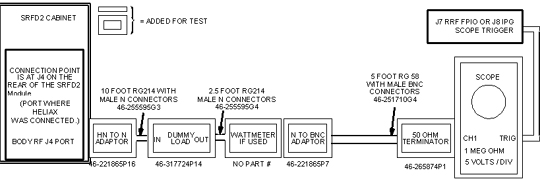
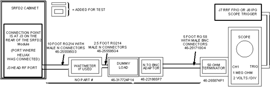

- 00000018WIA30839E20GYZ
- id_131076003.0
- Aug 29, 2019 1:43:07 AM
Alternate Equipment Setups and Non-Service Protocols
Use this section if the RF Power Measurement Kit is NOT going to be used. This section contains the setup information and protocols necessary to measure the body and head RF output power using either a wattmeter or oscilloscope. If the wattmeter is not used it is strongly recommended that an oscilloscope with a bandwidth of 300 MHz or greater be used for making the RF output power measurements. A 100 MHz oscilloscope can be used to make these measurements provided that the oscilloscope input channel to be used has been properly characterized and the resulting correction factor is known. The oscilloscope must be characterized and the correction factor must be known to account for measurement error at 63.86 MHz error due to bandwidth limitations of the 100 MHz oscilloscope.
| Item | Description | Part Number |
| 1. | RF Test Cable Kit | 46-255816G1 |
| 2. | 100 MHz Scope (equivalent or greater) | 46-183029P61 |
| 3. | Digital Multimeter | 46-194427P49 |
| 4. | 50 ohm, 200 Watt, 30 dB Attenuator (dummy load) | 46-317724P14 |
| 5. | Screwdriver, slotted ( long & narrow) | - |
| 6. | Wattmeter Kit (optional) | 46# not supplied |
| 7. | DMM Test Cable - BNC to Banana (optional) | 2239139 |

If the wattmeter is not available then bypass it's connection in the circuit using an N-female to N-female connector 46-265875P2.
If the system is operating with Release 9.X, CNV4 software, or its equivalent then it is no longer necessary to modify the ia_rf1 and ia_rf2 CV values. These will be set automatically when the calmode CV value is set equal to 5.
| PATIENT REGISTER . New Pt PATIENT INFORMATION Patient Id geservice Patient Name body rf Weight (Lb) 300 IMPORTANT Landmark Landmark >Sternal Notch PATIENT PROTOCOLS Patient Position PATIENT POSITION Patient Position >Supine Patient Entry >Head First Coil ...BodyAccept IMAGING PARAMETERS Plane >Axial Mode >2D Pulse Seq ...Spin Echo Accept Imaging Options none (default) Psd Name cal Protocol no entry SCAN TIMING * of Echoes 1 (default) TE 25 TR 55 | SCANNING RANGE FOV 24 Slice Thickness 5 Spacing 0 Start 0 End 0 # Slices 1 (default) L/R Center 0 (default) P/A Center 0 (default) Table Delta 0.00 (default) ACQUISITION TIMING Freq 256 Phase 128 NEX 2 Freq Dir >A/P Auto Center Freq >Peak (lowest window) Save Series Research OperationsDisplay CVs Modify the following: (if 9.X, CNV4, or equivalent only modify calmode) calmode 5 ia_rf1 32766 (90° maximum) ia_rf2 0 (180° minimum) Accept Research OperationsSetup Params Set TG 50Done Research OperationsDownload Prepare to Scan |

If the wattmeter is not available then bypass it's connection in the circuit using an N-female to N-female connector 46-265875P2.
If the system is operating with Release 9.X, CNV4 software, or its equivalent then it is no longer necessary to modify the ia_rf1 and ia_rf2 CV values. These will be set automatically when the calmode CV value is set equal to 5.
| PATIENT REGISTER . New Pt PATIENT INFORMATION Patient Id geservice Patient Name head rf Weight (Lb) 300 IMPORTANT Landmark Landmark >Sternal Notch PATIENT PROTOCOLS Patient Position PATIENT POSITION Patient Position >Supine Patient Entry >Head First Coil ...HeadAccept IMAGING PARAMETERS Plane >Axial Mode >2D Pulse Seq ...Spin Echo Accept Imaging Options none (default) Psd Name cal Protocol no entry SCAN TIMING * of Echoes 1 (default) TE 25 TR 55 | SCANNING RANGE FOV 24 Slice Thickness 5 Spacing 0 Start 0 End 0 # Slices 1 (default) L/R Center 0 (default) P/A Center 0 (default) Table Delta 0.00 (default) ACQUISITION TIMING Freq 256 Phase 128 NEX 2 Freq Dir >A/P Auto Center Freq >Peak (lowest window) Save Series Research OperationsDisplay CVs Modify the following: (if 9.X, CNV4, or equivalent only modify calmode) calmode 5 ia_rf1 32766 (90° maximum) ia_rf2 0 (180° minimum) Accept Research OperationsSetup Params Set TG 50Done Research OperationsDownload Prepare to Scan |